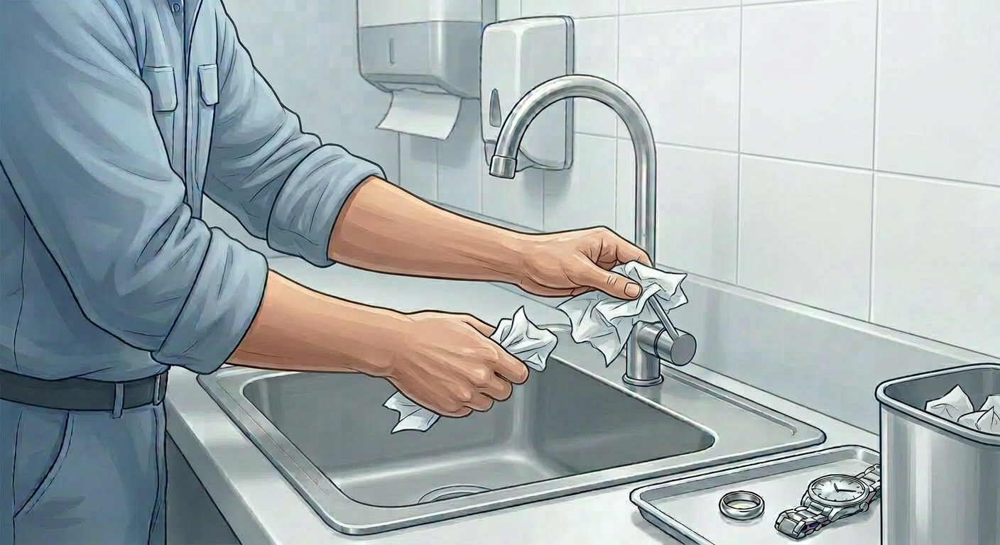

Step 1
Wet hands with warm running water
Use only the designated handwashing sink. Wet hands thoroughly with warm, comfortable running water. Remove jewellery from hands and wrists before beginning.

Hygiene · All Staff
Wash hands at the right moments and with the correct technique so food, equipment, guests, and coworkers are protected from contamination.
This SOP explains when staff must wash their hands and the exact method required at every designated handwashing sink.
Applies to all staff working in food preparation, dishwashing, service, storage, receiving, cleaning, and guest-facing areas. Gloves, utensils, and sanitizer do not replace handwashing.
| Term | Definition |
|---|---|
| SOP | Standard Operating Procedure; the approved method for completing this task. |
| Person in Charge | The manager or certified lead responsible for supervising the task and making food safety decisions during the shift. |
| Corrective Action | The required response when a step, limit, record, or safety standard is missed or cannot be verified. |
Wash hands every time one of these triggers happens, even if you washed recently.
Wash hands before putting gloves on and after taking gloves off. Contaminated gloves can transfer contamination the same way bare hands can.
Step 1
Use only the designated handwashing sink. Wet hands thoroughly with warm, comfortable running water. Remove jewellery from hands and wrists before beginning.
Step 2
Apply a full pump of antibacterial soap. Lather palms, backs of hands, between fingers, under nails, thumbs, and wrists for at least 20 seconds.

Step 3
Rinse under running water until all soap is removed. Hold hands angled downward so water runs off the fingertips instead of back toward the wrists.

Step 4
Dry hands completely with a paper towel. Use the towel to turn off the tap if required, then dispose of it immediately. Cloth towels are not permitted.

Stop food handling in that area and tell the manager immediately. Restock soap or paper towels before work continues.
Stop the task, wash hands correctly, change gloves if worn, replace contaminated utensils or boards, and discard any food that may have been touched with unwashed hands.
Do not wash hands in the prep sink, pot wash, bar sink, or dish area sink. Do not dry hands on aprons, cloth towels, uniforms, or shared cleaning cloths.